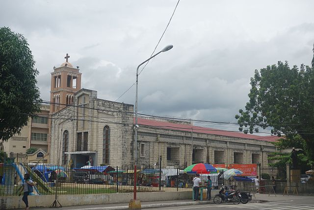
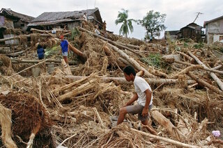
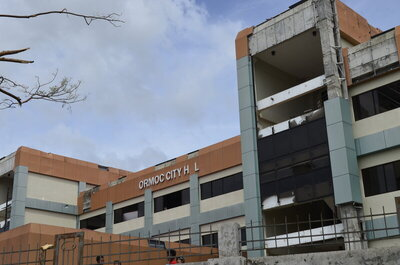
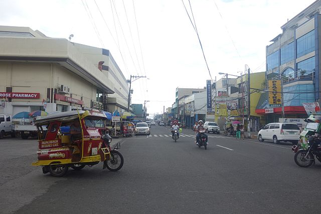

History
October 20, 1947
Ormoc became a city by virtue of Republic Act No. 179, becoming the fifteenth city in the Philippines and the first in the Eastern Visayas region.
November 5, 1991
On the morning of 5 November 1991, the Ormoc region was inundated by Tropical Storm Uring. The city government recorded 4,922 deaths, 3,000 missing persons, 14,000 destroyed houses and more than P600 million worth of damaged property.
November 7, 2013
Typhoon Haiyan, one of the most powerful tropical cyclones ever recorded, made a landfall in the Philippines. While it killed far fewer people as Tropical Storm Uring, it left widespread devastation to the city with destruction and damages in 90% of its structures.
Demographics
The natives of this city are called Ormocanons, with most being Cebuano speakers, as with the whole western and southern parts of the island of Leyte. A definite number of Waray speakers is also present within the city. Like most Filipinos, Ormocanons are predominantly Roman Catholic, and the city celebrates its annual fiesta in honour of the patron saints Saint Peter and Saint Paul on June 28 and 29. Other main Catholic holy days, including the local fiestas of barangays, are observed throughout the year. There is also a visible Muslim minority within the city and all over the island, evidenced by the mosques within the cityscape and most of them are Maranaos from the twin provinces of Lanao del Norte and Lanao del Sur in Mindanao.
Economy
Ormoc's economic base is a mix of agriculture, aquaculture, industry, tourism, and commercial services. Sugar cane, rice and pineapple are the major agricultural production. The city enjoys economic growth because it supplies a large part of the country's power needs with its abundant geothermal power resources from the Tongonan Geothermal Power Plant in Barangay Tongonan and the neighbouring Kananga town. Ormoc is also the gateway to the Leyte Industrial Development Estate in the nearby town of Isabel, home of the Philippine Phosphate Fertilizer Plant, the largest fertilizer factory in Asia, and the Philippine Associated Smelter and Refining Company, the country's biggest copper processing plant, among other industries.